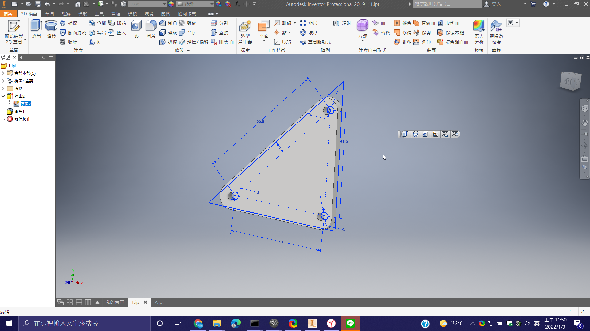
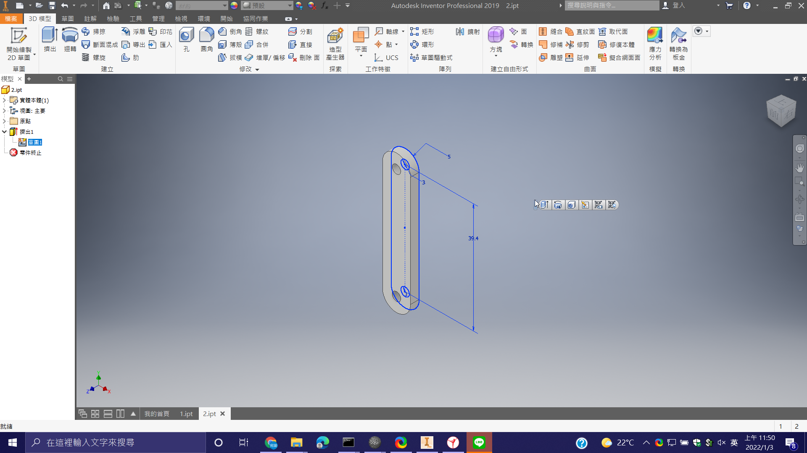

W5_下載CAD套件 <<
Previous Next >> W7
W6_Wink
1.下載 debugmode wink
_________________________
2.和 ShareX 共用 ffmpeg
_________________________
3.建立新檔
點 File , New

選取適當畫面大小後，按OK

按 Minimize To Tray 開始擷取關鍵影格
對右下角 wink 圖示按右鍵
- Capture Now 可選取單個影格
- Start Timed Capture 開始定時擷取連續影格
- Finish Capture 結束擷取
________________________
4.編輯影格前先調整畫面大小


_________________________
5.輸出檔案
_ _ _ _ _ _ _ _ _ _ _ _ _ _ _ _ _ _ _ _ _ _ _
找到輸出後的檔案，複製影片檔

貼到自己倉儲下的 downloads 資料夾中
________________________
6.在近端匯入 wink
_ _ _ _ _ _ _ _ _ _ _ _ _ _ _ _ _ _ _ _ _ _ _ _ _
如果 wink 影片有箭頭的按鈕，要複製 .js 檔案中的原始碼，貼到 Source code
複製全部原始碼
貼在 <script>// <![CDATA[ 下面
W5_下載CAD套件 <<
Previous Next >> W7